Diary-结束了疫往情深的2022
😅这篇博客记录了11.21-12.31，闽了以后的2022剩余时光。
😅这个Omicron还真是猛啊！直到现在我还是虚的一笔。
😅如果不小心透露了啥不合适的敏感信息，马上删改。
目录
- 11.21
- 11.24
- 11.25
- 11.26
- 11.27
- 11.28
- 11.30
- 12.1
- 12.3
- 12.4
- 12.6
- 12.9
- 12.12
- 12.13
- 12.14
- 12.15
- 12.18
- 12.22
11.21
按照社区的要求，从低风险（虽然保定已经遍地都是了但它就是低风险）回榕的要进行3天居家隔离，并进行3天3检，与很多同学又是监听器又是被拉去酒店相比，这个政策算是很温和了。
这一天社区打了好几个电话过来搞得我提心吊胆的😅就怕社区变卦要拉我去酒店了。
我还特意问了社区我居家隔离怎么测核酸？她说我出去测😅。
🐔大怕我们居家隔离太无聊，网课都不带停的。
16：53
走的时候以为这个学期已经结束咧！书都没有带回去，还得拜托舍友寄书😅。
11.24
虽然隔离全靠自觉，但我还是很老实地按照社区的要求居家隔离3天后才开始乱跑。
19：03
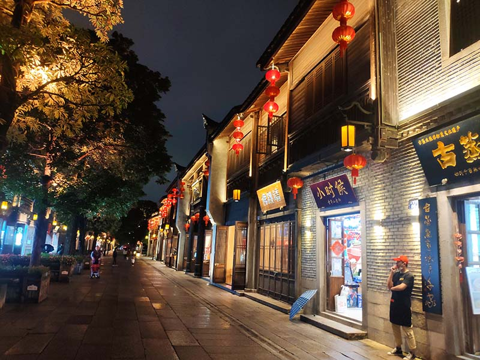
不知道福州是刚刚经历过疫情还是那天下毛毛雨，三坊七巷人特别得少，而外面的东街口已经车水马龙了。
19：49
当天晚上国内又因为疫往情深的原因发生了非常不好的事情😅。时至今日，当我尝试把这张图从我的手机通过QQ转发到电脑上时，会转发失败。
说实话这件事情并没有像之前贵州大巴翻车那样令我触动，一是那段时间我没怎么看新闻，二是现在人已经回家，不像当时因为🐔大迟迟不开学而对一些防疫政策感到不满。
但是呢，这件事直接引发了后续一系列balabala…3年了，大家估计都很失望了吧。
11.25
既然解封了就多走走？提着伞一路杀到解放大桥前了。
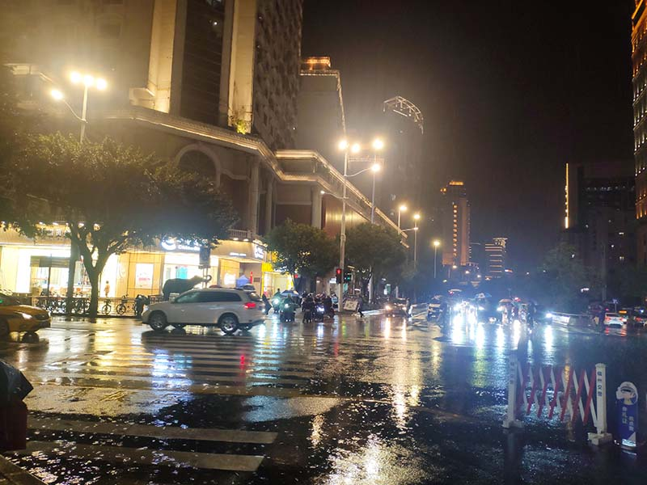
中亭街。
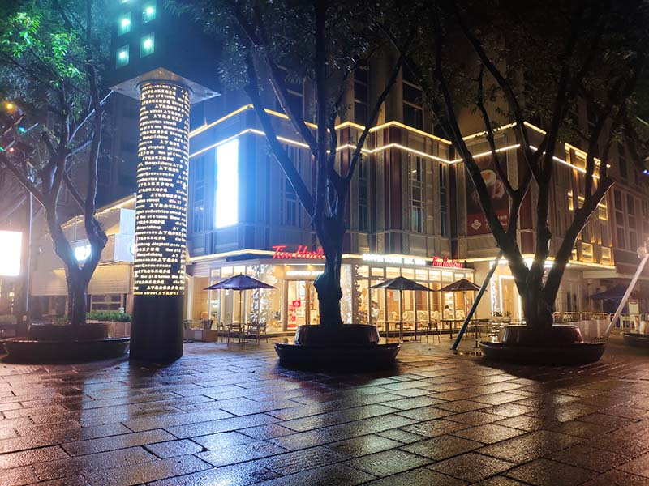
上下杭。
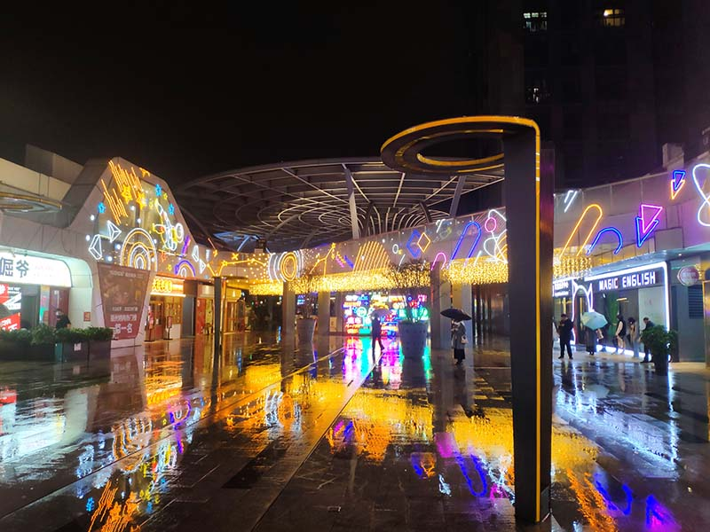
万科。
11.26
09：06
【福州高新区教卫局】为加快实现疫情防控常态化，福州高新区于11月26日上午6点-12点开展新一轮的区域核酸检测，请您就近到核酸采样点检测，全程佩戴口罩、保持一米线、不扎堆、不聚集。采样点将于12点准时关闭。凡应检未检，造成疫情传播的，将承担相应法律责任。谢谢您的配合！
测核酸，测测测！测完就跑西湖公园玩去了。
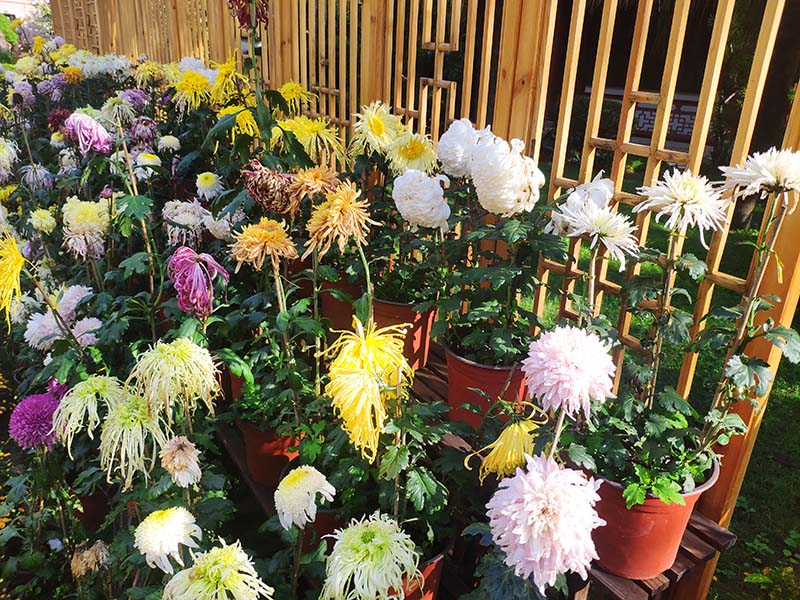
晚秋有点萎的菊花。
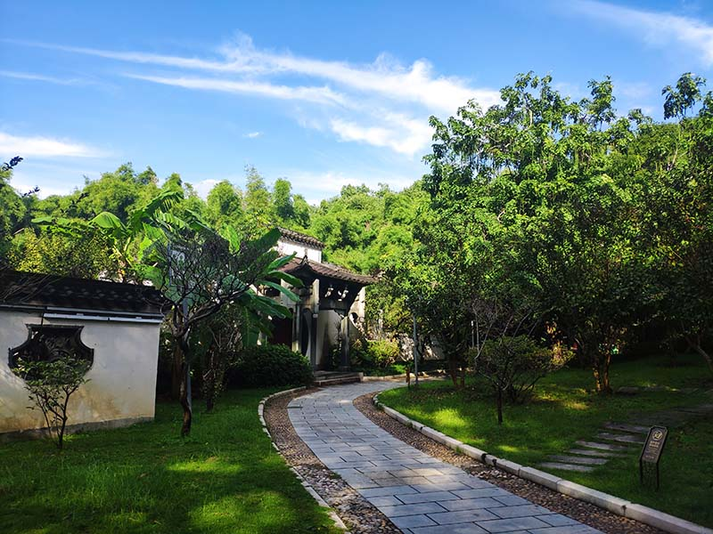
11.27
10：04
【福州高新区教卫局】为加快实现疫情防控常态化，福州高新区于11月27日上午6点-12点开展新一轮的区域核酸检测，请您就近到核酸采样点检测，全程戴口罩、保持一米线、不扎堆、不聚集。采样点将于12点准时关闭。凡应检未检造成疫情传播的，将承担相应法律责任。雨天慢行注意安全！
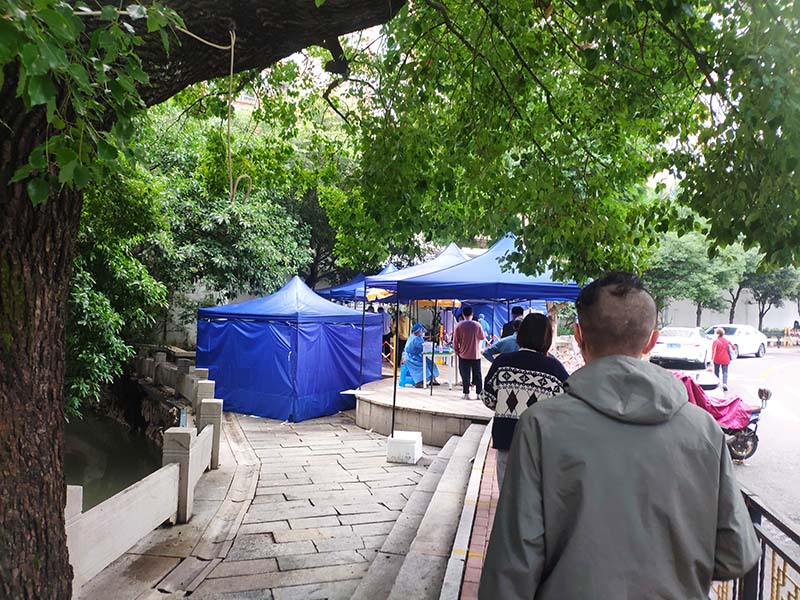
测核酸，测测测！我家这边测核酸都不怎么要排队，跟🐔大的贪吃蛇相比，还有点不习惯。
12：07
根据导师在群里发的消息，🐔大基本已经沦陷了。
而这时候新闻上汇报保定一直都是零星的新增，这时候我才意识到河北瞒报的情况非常严重，就说之前保定都没什么新增的情况下学校怎么会突然有🐏呢。
我想就算没有闹事等的直接原因，这个防疫政策也会做出一定的改变，因为真的马上捂不住了。
11.28
07：49
这应该是我听到的最后一个支持清零的新闻了。
16：39
福州的高校又恢复线下上课了！因为我爸要工作我就跟去闽侯了。三十年河东三十年河西，现在我又开始家里蹲的生活😅。
在经历过🐔大的两个月之后觉得⭐顺眼了许多😅，看到超话里都在骂⭐，感觉他们生在福中不知福😅。
11.30
15：02
由于您近期到访或途经的区县有发生本土疫情，属于低风险区域，请您按国家现行防疫规定，落实三天内两次核酸检测的要求，结果阴性后将解除弹窗。如完成检测并结果阴性后，健康码未恢复或信息异常，请拨打400-666-1331福建健康码服务热线咨询。
打开闽政通发现莫名奇妙健康码有弹窗了😅。才知道鼓楼被划为低风险了。
后来听同学说这个三天两检不管它也不会怎样。但我还是老老实实地去测了。
12.1
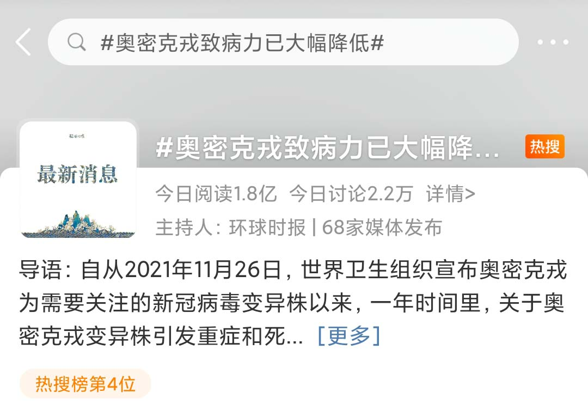
那时我也是这么想的！
08：55
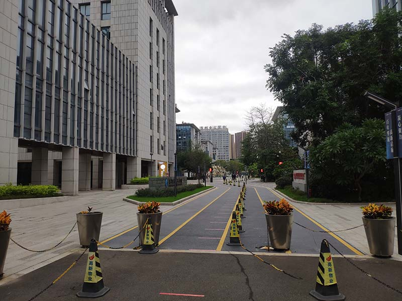
打着测核酸的幌子，又往高新区转了一圈🤔。
12.3
多地放松了防疫政策，而干啥都很慢的福建还要进行最后一波全员核酸🤔。
那时候大家都以为疫情彻底结束了，其实是刚刚开始？
08：08
【福州高新区教卫局】根据当前疫情形势，福州高新区于12月3日上午6点-12点开展新一轮的区域核酸检测，请您就近到核酸采样点检测，全程戴口罩、保持一米线、不扎堆、不聚集。采样点将于12点准时关闭。凡应检未检造成疫情传播的，将承担相应法律责任。雨天慢行注意安全！
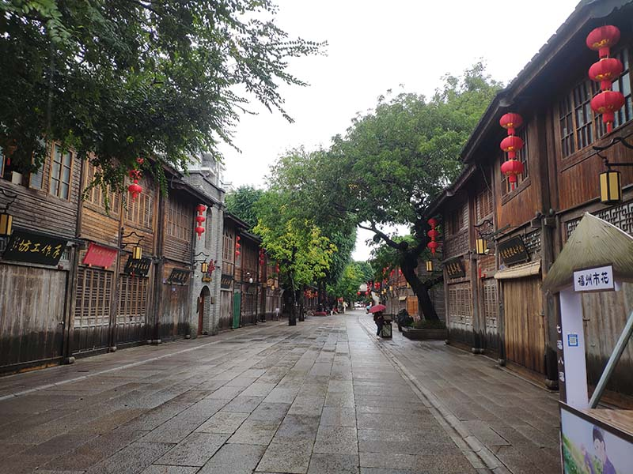
最后一波测核酸了，测完福州好多核酸点都撤了。
因为在闽侯家里蹲太无聊，又回鼓楼开始馆里蹲的生活🤔，图书馆这一年半来不知道收留了我多少次我这个无业游民了。
三坊七巷和图书馆的人比疫情前少了很多，大家谨慎放飞自我。
22：12
@全体成员 如果大家回家不是集中隔离，是居家隔离的，一定要做好在家的自我隔离防护，已经有部分同学，回家之后发烧，核酸异常，所以同学们回去千万不要随意走动，等自我隔离结束后，没有问题再外出。有发烧生病的同学也不要紧张，烧的厉害就吃退烧药，吃上莲花清瘟胶囊，然后大量的喝水，每天定时开窗通风，很快就能恢复的。
河北人还真是喜欢莲花清瘟啊😅这玩意大家都觉得没啥用，但是好像都会买那么一包。
12.4
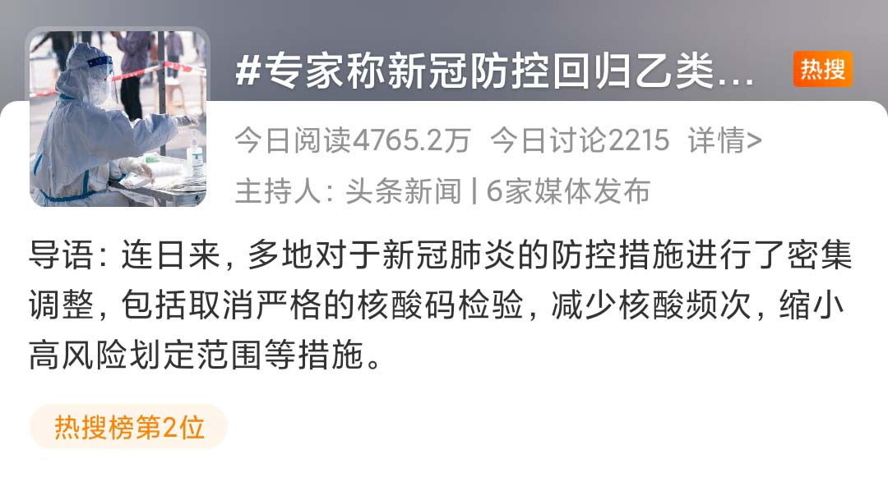
媒体开始为后面的放开造势了。机智的我买了10盒抗原！虽然好像也没啥用😅。
12.6
12.9
12：04
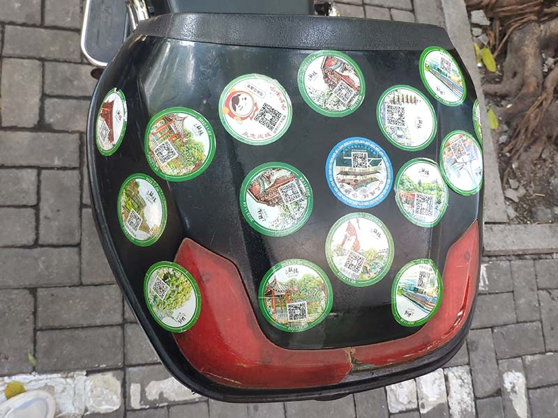
中午去吃饭看到的别人电瓶车后备箱上的贴纸。之前鼓楼每进行一次全员核酸都会送一次贴纸，还蛮有意思的。
15：32
在福州依然没有清零的情况下，star解封了，这放在以前完全不敢想😅。
12.12
瞒报就算了，邀功有点过分了喂😅！
12.13
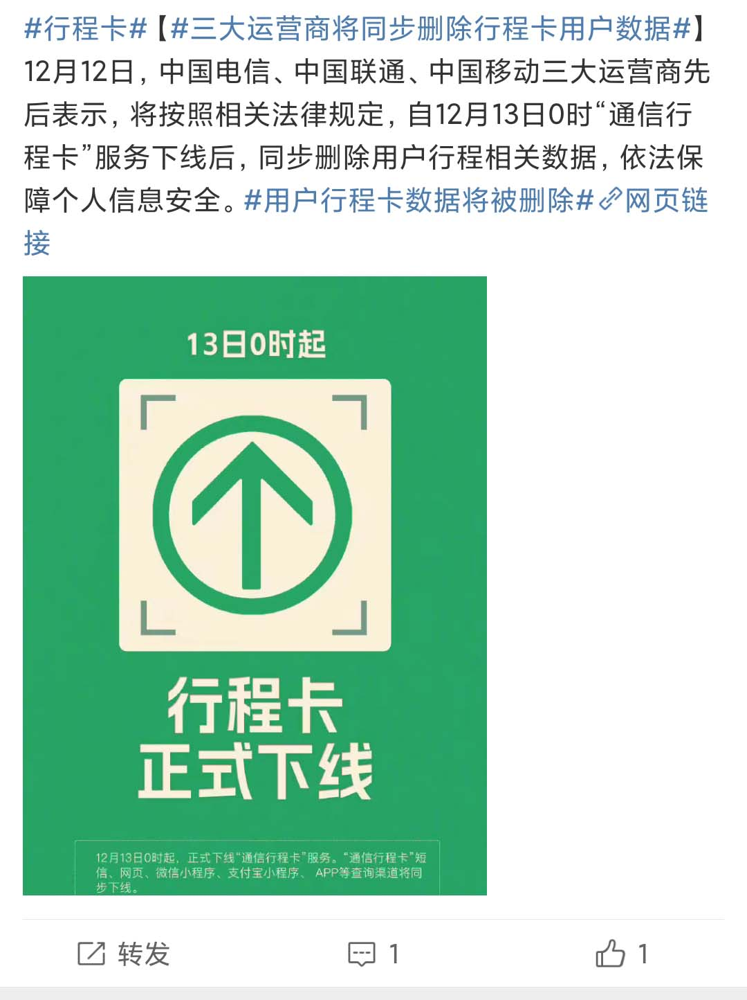
行程卡彻底下线了！
09：06
今天⭐里据说有🐏直接停课了，我爸因为没及时看消息喜提白跑一趟😅。
11：11
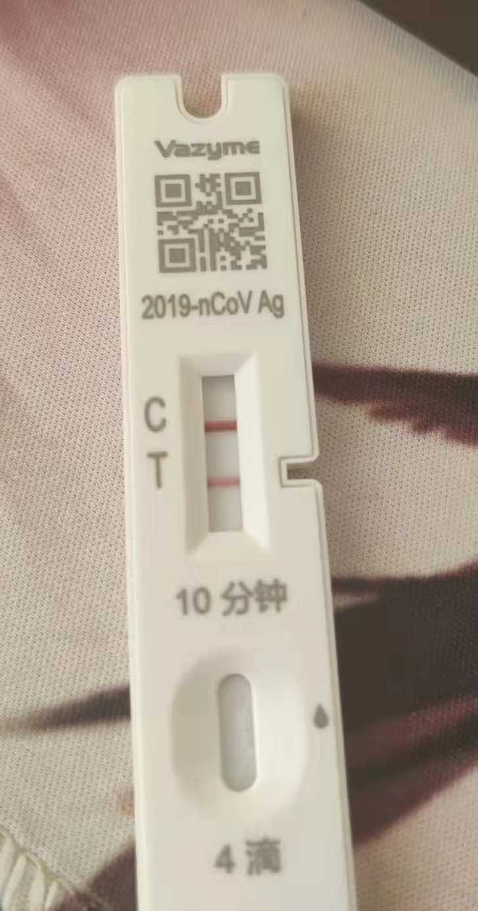
舍友寄了！那时候还觉得很惊奇，这么遥远的事情发生在了这么近的人身上。
12.14
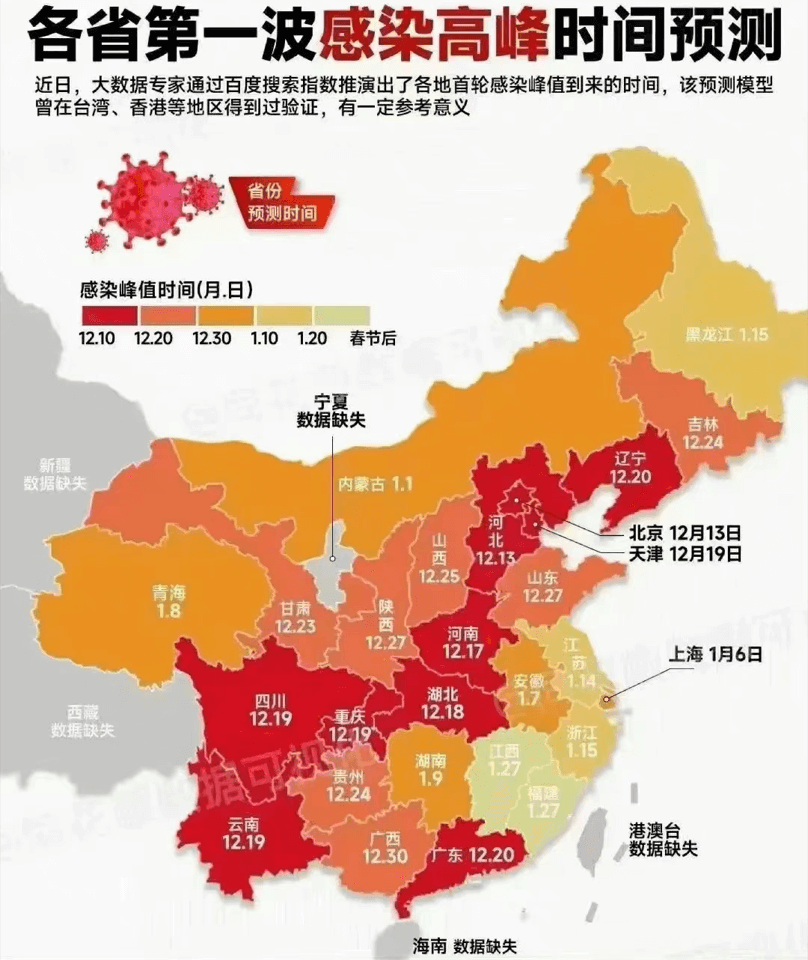
网传的各省第一波感染高峰预测图，看到福建在最后还挺庆幸，后来才觉得预测的太保守了😅。
12.15
09：30
组会一拖再拖终于要开了。
这是今年在福州唯一一次组会，然后就通知寒假开始了不组会了😅？我怎么感觉导师比我还不想开组会。
从组会中得知，我们组凡是河北的都🐏了，不是河北的都没🐏，导师听后直接感慨“让你们离开保定真是正确的决定啊”😅。
12.18
11：09
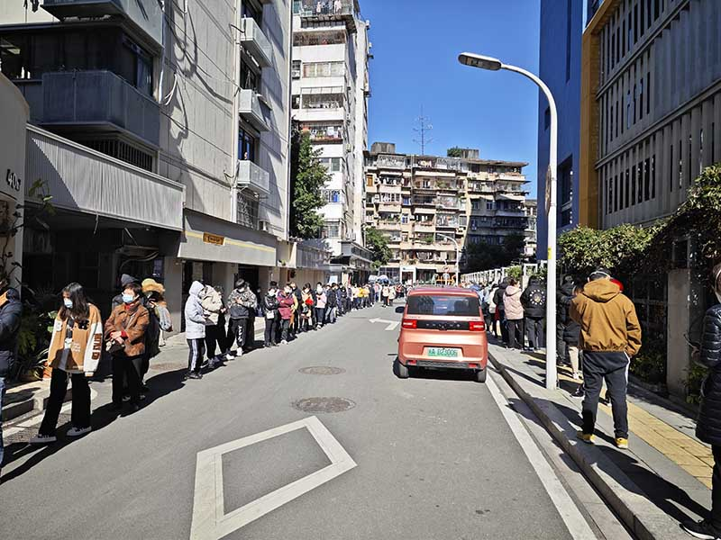
图书馆门口的单管核酸点，久违的贪吃蛇😅。
再加上之前图书馆楼下的各种救护车声，以及同学们说他们的同事纷纷中招，终于意识到福州已经到处都是了。
从那天以后，再也没去图书馆了。
从那天以后，福州五区中小学全部转成线上课。
14：19
把现在的混乱现状怪罪于“撞开门的人”，不仅错误归因了放开的决策过程、回避了导致问题的本质，同时更重要的是再次把压迫转回为了活下去而破釜沉舟的人身上。撞开门的大多是丢了工作的人、是吃不起饭的人、是亲属逝世得不到救治的人。他们撞开门可能并没有更多形而上的诉求，只是肚子饿、钱包空、心脏痛。无法与他们的痛苦共情已经很缺乏人性，现在还要把因为没有健全完备的应急机制、没有循序渐进的过渡方案、没有合理规划的防疫预算而造成的大规模感染现状，怪罪到本身就已经是这些错误的受害者身上实在是太令人恐惧和绝望了。
网上的舆论从抨击防疫政策转向抨击抨击政策的人😅。只能说这段话有一定道理吧，同时突然觉得政府有时候还蛮不容易的，因为你总是无法让所有人都满意。
12.22
14：07
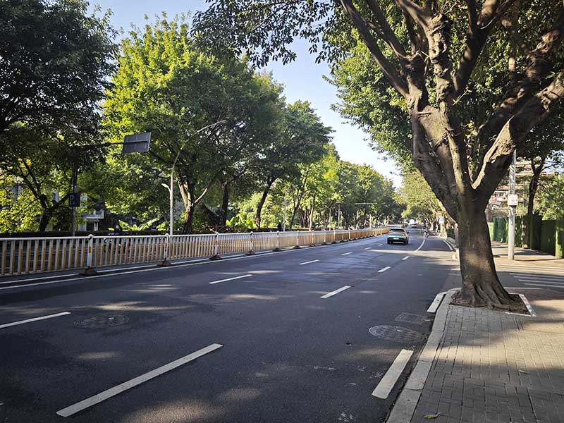
当天早上喉咙有点不舒服，但是也没过多在意，就觉得是自己花生吃多了，下午又跑去西湖公园玩😅。
白马北路空空荡荡的。
16：54
结果从公园里回家就开始脚疼？就觉得是自己走太远了。
然后躺了一会儿开始发烧？哦那是真的寄了。
17：00
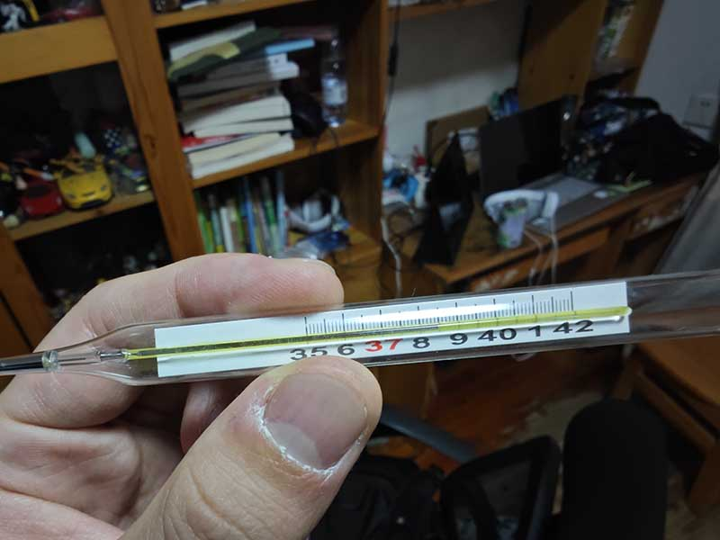
体温开始飙升，2022的尾声从0距离体验新冠开始😅。
然后接下来的几天，小伙伴们也陆陆续续地🐏了，病友局上线😅。
一想到福州的毒株是最弱的那种，保定是最强的那种又绷不住了！
直到写博客的这一天，人还没有完全好😅，这玩意果然不是小感冒嘛，得了新冠之后才知道之前90%以上无症状都是胡扯蛋😅。
就放个自己的体温波动图吧！
|
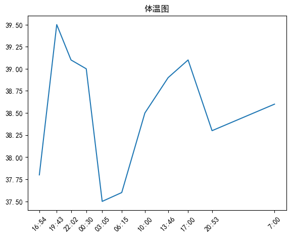